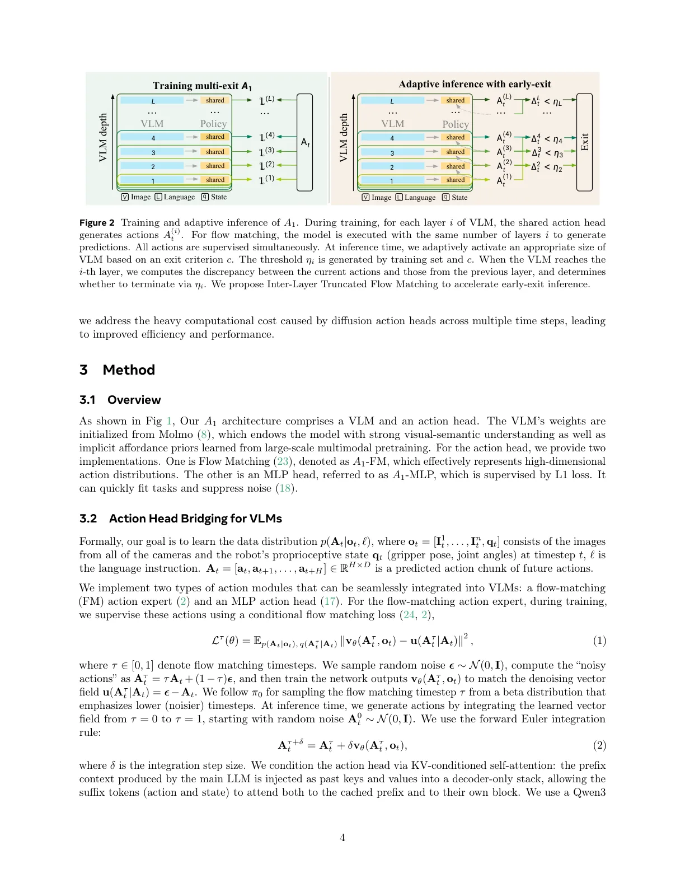
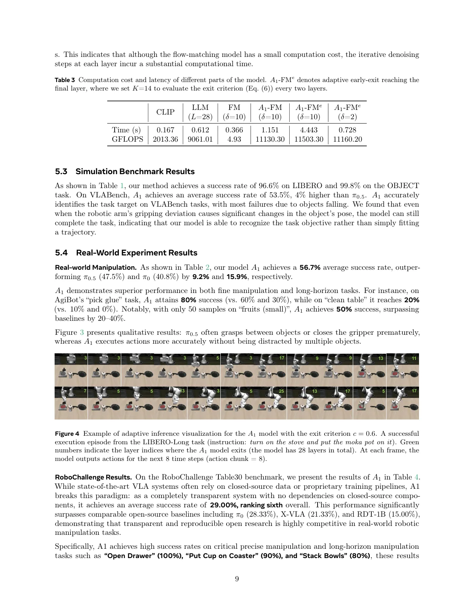

💡速记层 · 思想 / 逻辑 / 方法
默认读完就走的一层——只讲思想、逻辑、方法；效果只作验证。要核对原文/钻细节再看下面「深读层」。
- VLA 部署的核心痛点：十亿参数骨干 + 10–20 步迭代去噪让实时控制在消费级硬件上不可行。
- 实验观察：flow matching 轨迹在不到 3 步内就锁定正确模式；连续控制步之间 action 变化缓慢；VLM中间层隐状态已足够驱动 action 预测。
- 结论：推理中大量计算是冗余的——只需在 action 确实改变时才运行更深的层和更多去噪步。
- 两项技术同时截断：①动态 early-exit（action 一致性阈值触发退出骨干）；②Inter-Layer Truncated Flow Matching（层间热启动，δ=2 步去噪）。
- 全栈开源训练管线（代码 + 数据脚本 + 中间 checkpoint + 评估协议），声称"完全透明可复现"，打破闭源惯例。
github.com/ATeam-Research/A1；承诺释出权重、数据处理脚本、评估协议（截至报告时 repo 已有代码和 HuggingFace checkpoint）。
计算量削减 76.6% 时成功率仅降 1.7%，且简单动作（移动）早在第 3–5 层退出，复杂动作（抓取、开灶）深入到第 17–25 层——这直接验证了"冗余计算"假说。RoboChallenge 上超过全部可比开源系统进一步坐实了开源 VLA 可以有竞争力。
想看具体数字（点开）
- LIBERO 平均成功率 96.6%（OBJECT 任务 99.8%），与 π0.5(96.9%) 持平。
- VLABench 平均 53.5%，高于 π0.5(49.5%) +4%。
- 真实机器人 4 平台均值 56.7%，超 π0.5(47.5%) +9.2%、π0(40.8%) +15.9%。
- RoboChallenge Table30：29.00%（π0=28.33%，X-VLA=21.33%，RDT-1B=15.00%）。
- 推理时延：A1-FM 标准 1.151s/step → 早退(δ=10) 4.443s → 早退+ILTFM(δ=2) 0.728s。
- LIBERO-Plus 零样本泛化：A1-FM 75.3%，超 OpenVLA-OFT、π0、π0-FAST。
- c=0.1（最激进）时削减 76.6% 计算，成功率 92.3%（降 1.7% vs. 96.6%）。
Track A（移动/通用操作 VLA）中度命中：A1 提出的"截断+自适应推理"思路对任何需要低延迟部署 VLA 的操作场景都有直接价值，尤其是 action head + 骨干联合加速的工程路线可借鉴。但 A1 本身不涉及移动底盘或长程家务，实验平台以桌面操作（Franka/AgiBot）为主。Track B（足式算法）不命中——无 locomotion 相关内容。建议：读速记层即可；若关注 VLA 推理加速/低延迟部署则值得深读 §3.3。
◆核心观点 · 证据
每条 = 中文论点 + 📍页/节 + 🔤逐字原文(Ctrl-F 锚点) + 🀄译文 + 💡解读。
Vision–Language–Action (VLA) models have emerged as a powerful paradigm for open-world robot manipulation, but their practical deployment is often constrained by cost: billion-scale VLM backbones and iterative diffusion/flow-based action heads incur high latency and compute, making real-time control expensive on commodity hardware.
1. Trajectory convergence: flow-matching trajectories can lock onto the correct mode within fewer than three denoising steps; additional iterations mostly refine precision with diminishing returns. 2. Action redundancy: across consecutive control steps, many actions change smoothly and only require coarse updates. 3. Layer-wise coupling: intermediate VLM hidden states already encode sufficient spatial and visual features to seed the action prediction (e.g., the flow-matching vector field), making full-depth backbone evaluation often unnecessary.

we randomly sample a layer index i ∼U(0, L), where L denotes the total number of layers in the main LLM. For the MLP action head, instead of using the last hidden state to generate actions as in the conventional design, we supervise the loss L(i) on the actions predicted from the hidden state at layer i.
Early exit at layer i is triggered by a consistency test against the previous layer's action: ∆i_t = d(A(i)_t, A(i−1)_t) < ηi where d(·,·) is a discrepancy metric and ηi is a layer-specific threshold calibrated offline.
To address this issue, we propose Inter-Layer Truncated Flow Matching. We first set the number of denoising steps δ to a small value (e.g., 2). The LLM is executed layer by layer. At each layer i, the FM action head performs δ denoising steps to generate an action chunk A(i)_t, which is then compared with the A(i−1)_t from the previous layer to determine whether to exit early via Eq. (6). The output of the current layer is passed to the next layer as the initial condition for denoising.
We pretrain A1 using open-source robotic datasets including DROID (15), AgiBot (1), RoboCOIN (39), RoboMind (38), GM-100 (36) and RoboChallenge (43). This practical training setup leverages publicly available data to support broad generalization without relying on proprietary large-scale corpora.

While state-of-the-art VLA systems often rely on closed-source data or proprietary training pipelines, A1 breaks this paradigm: as a completely transparent system with no dependencies on closed-source components, it achieves an average success rate of 29.00%, ranking sixth overall.
When c = 1.0, the A1-MLP model achieves its best performance, with an average success rate of 96.6%, while reducing layer computation by 15.6% compared to full inference. As c decreases to 0.7, 0.4, and 0.1, the computational reduction increases to 39.1%, 58.5%, and 76.6%, respectively, while the success rate drops by only 0.3%, 2.3% and 1.7%.
⎘开源状态 · 实时核查（2026-06）
论文声称"fully open-source and transparent"并承诺释出完整训练栈。以下为截至当前的实际发布状态（非仅依赖 PDF）。
- 代码
- 已开源 github.com/ATeam-Research/A1（98% Python，含训练/推理/评估脚本；4 commits，39 stars，5 forks）
- 权重
- 部分 HuggingFace 上有预训练 checkpoint（含 LIBERO/VLABench/RoboChallenge 微调版），但尚无正式 Release，license 未在 README 中明确声明
- 训练数据
- 部分 6 个公开数据集（DROID、AgiBot 等）本身已公开；自采 15,951 条轨迹未独立发布，但承诺提供数据处理脚本/清单
- 评估协议
- 已开源 LIBERO、VLABench、RoboChallenge 评估脚本含在 repo 内
- License
- 待确认 README 未明示开源协议（arXiv CC-BY 许可仅涵盖论文文本，不覆盖代码/权重）
repo 仅有 4 commits，无正式 Release tag，license 未声明——这与论文标题中"Fully Transparent Open-Source"的定位有明显落差。代码和文档覆盖度较好，但自采 15,951 轨迹数据和 license 声明是两个尚待补全的关键缺口。建议关注 repo 后续更新。
We commit to releasing the full stack of artifacts for A1 (model weights, training/inference code, data processing scripts/manifests, and evaluation protocols).
⚖批判 · 评级
"截断"思路工程落地踏实：三条经验观察 → 两项联动技术（early-exit + ILTFM），逻辑链清晰，消融表格完整，可控 budget 参数 c 给工程师直接抓手。多平台真机验证（Franka/AgiBot/OpenArm/Dobot-Arm）覆盖度在 VLA 论文中属较好。开源承诺若兑现，社区可直接用来做低延迟 VLA 工程基线。
① "Fully Transparent"存疑：repo 仅 4 commits、无 license、自采数据未独立发布，与标题落差明显，需跟踪后续更新。② RoboChallenge 排名语境：第六不是第一；前五均依赖闭源或未完全公开的系统，"开源第一"成立但绝对成绩（29%）离 DM0(56%) 仍有差距。③ VLABench 失败分析浅：自承多数失败因"物体掉落"，但未分析是 action 精度问题还是 policy 层面。④ 骨干选用 Molmo（Qwen2-7B），相较 π0 系列 PaliGemma+flow expert 的选型差异未做充分对比讨论。⑤ 真机每任务仅测 10 次，统计置信度有限。
评级：Valuable 工程贡献清晰、开源意图值得鼓励，但"Fully Transparent"承诺尚未完全兑现，实验规模中等，离 Breakthrough 还有距离。在 VLA 推理加速这个垂直领域属于高质量工作。